The digital form is an element of collection of our information, of our knowledge thanks to a path of input fields that users are led to follow. As opposed to the paper format, digital forms have stood out for their simplicity in receiving, sending and processing the data entered. However, having to complete a digital form remain until now a daunting and confusing task for the user.
Bringing an experience effect through the interaction it establishes with the human, the interface of the digital form is the tool of this experience. As follows, the digital designer is required to enchant it by developing the ideal perception of the user's journey.
For example, by exploiting the field of digital accessibility, people with visual impairments are led to use a technological phenomenon like speech recognition. This allows a new exploration of the interaction between a human and a digital interface. Considering this problem of using the format of the input fields can call into question the information of the same value.
Thus, one can imagine making a digital form without any written words in the digital interface. This approach leads the digital designer to use graphic tools such as illustration, photography, video, and sensory tools such as sound or touch (through the vibrator of a mobile phone for example). By combining these creative effects, they support the user to spot a singular « experience-of-the-world », like an artistic movement.
Introduction
Le formulaire numérique est imposé par les plateformes pour s'inscrire, s'enregistrer, acheter, postuler, ou donner son avis. Souvent nécessaire voire obligatoire, c’est un moyen efficace et direct pour les services de collecter les informations de leur utilisateur grâce au cheminement de champs de saisie qu'ils sont amenés à suivre. Contrairement au format papier, les formulaires numériques se sont démarqués pour leur simplicité de réception, d'envoi et de traitement des données saisies. Cependant, devoir remplir un formulaire numérique reste toujours une tâche ardue et confuse pour l’utilisateur [Figure 1]. Généralement automatisé, le formulaire numérique peine à établir une expérience virtuose lors de son utilisation. De nombreuses solutions ont émergé dès les années 2000 par les bonnes pratiques du design de l'expérience utilisateur (UX)1 ou d’interface utilisateur (UI)2. Néanmoins, aucune d’entre elles ne remet en question le cœur de l’interaction entre un humain et un formulaire numérique.
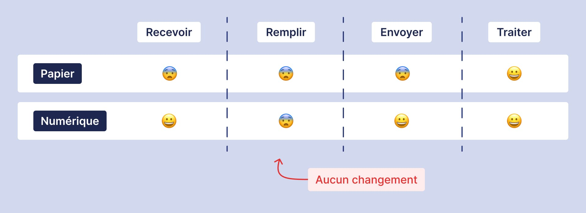
[Figure 1] Schéma représentant l'évolution des caractéristiques du formulaire, en format papier et numérique.
Si nous revenons au sens du mot, un formulaire est à l’origine un recueil de formules, de prescriptions, utilisé dans les domaines du droit, de la pharmacie, et de la religion. Écrit sur des gravures puis sur papier, il permet d’ancrer dans les mémoires des références clés. De nos jours, le formulaire est un élément de collecte de nos connaissances, de nos informations. Il est utilisé comme un moyen de réception de nos données personnelles appliquées à des fins administratives. De nature formelle et sans nuances particulières, le formulaire n’a aucune intention — à proprement parler — d’écrire des expériences à vivre ou des souvenirs [Figure 2].
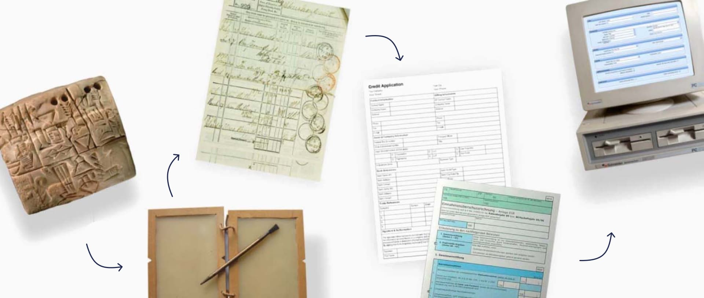
[Figure 2] Évolution du format du formulaire, en passant par la gravure, le papier, puis le numérique.
Seulement, dans l’expansion mondiale d’Internet et des nouvelles technologies numériques de la fin du XXe siècle, la numérisation du formulaire est considérée comme un espace de saisie dans une interface utilisateur permettant une personnalisation de l’interaction entre l’humain et le formulaire numérique. Dès lors, la personnalisation peut permettre une expérience adaptable et flexible pour l'utilisateur. Le formulaire peut ainsi apporter une autre dimension expérimentale afin d’exprimer ce qu’il peut véhiculer : une relation d’un humain à une interface, mémorable. Ainsi, comment repenser une relation positive entre un humain et un formulaire numérique ?
Pour répondre à ce questionnement, nous nous pencherons dans un premier temps sur les coercitions3 des formulaires numériques, en exposant la formalité de leurs compositions, puis en spécifiant de quelles façons leurs contenus peuvent être formatés. Dans un second temps, nous nous questionnerons sur l'amélioration de la flexibilité du formulaire numérique par le design numérique4, en explorant sa forme et l'expression de son contenu.
I - Des formulaires numériques coercitifs
À l’heure où les formulaires numériques sont toujours utiles pour traiter des données personnelles à des fins administratives, leur usage n’en est pas davantage entraînant ou actualisé
I.1 - Des contraintes formelles
Pour comprendre la source de ses problèmes, il faut tout d’abord interroger la forme des formulaires numériques. Aux abords de son format papier, un formulaire est reconnaissable par l’humain par sa composition scrupuleuse. Un titre, une description, un champ de texte, des cases à cocher, etc. Elle se trouve naturellement perceptible dans les formulaires numériques à travers l’héritage qu’ils ont pu recevoir du formulaire papier. Cela sollicite l’utilisateur à se prévisualiser les informations personnelles qu’il s'apprête à entrer d’une manière oppressante. Google Forms [Figure 3], outil de création et de partage de formulaire en ligne depuis 2006, est une des représentations courantes à ce jour du modèle d’un cheminement coercitif. Selon mon enquête exercé sur ce même outil, 10% des utilisateurs (soit 3 sur 30) ont pensé que leur expérience dans mon formulaire leur a été énervante, et 40% (soit 12 sur 30) ont été mitigés [Figure 4].
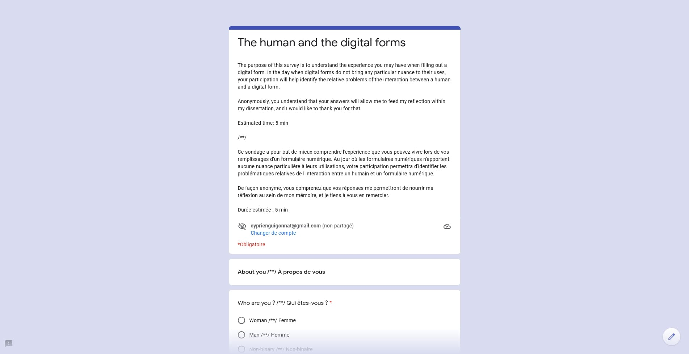
[Figure 3] Capture d'écran de l'outil Google Forms pour l'enquête : « The human and the digital forms » (L'humain et les formulaires numériques, en français). 2021 [En ligne] https://forms.gle/jY3knJXaJJqnAh3v7.
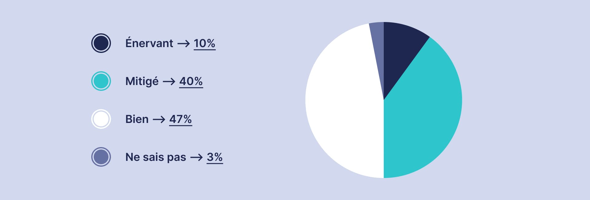
[Figure 4] Résultat en pourcentage de quatre réponses (Énervant, Mitigé, Bien, Ne sais pas) représenté par un diagramme circulaire sur la question : « Qu'avez-vous pensé de votre expérience dans ce formulaire numérique ? ». 2021 [En ligne] https://forms.gle/jY3knJXaJJqnAh3v7.
Cela étant dit, cette composition réglementaire de ce formulaire numérique peut confirmer que son utilisation peut éprouver de la contrariété pour l’utilisateur. De plus, elle peut être reconnaissable dans d’autres plateformes en ligne. Le fait de se créer un nouveau compte sur chacun de nos nouveaux services comme le réseau social Twitter par exemple [Figure 5], ou renseigner ses coordonnées sur Amazon [Figure 6] afin d’acheter nos produits de prédilection. Toutes ces tâches sont astreignantes5 pour l’utilisateur à cause d’une nécessité imposée par les services d’acquérir nos informations personnelles.
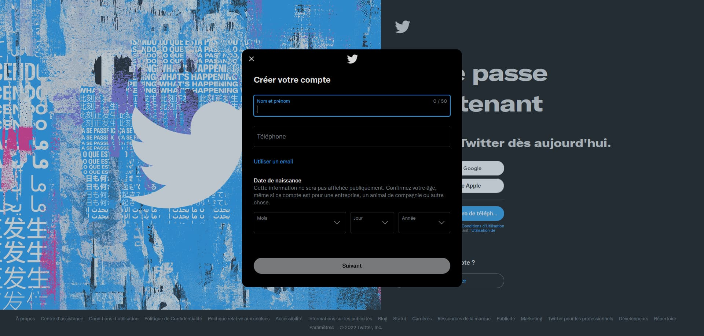
[Figure 5] Capture d'écran d'une succession de champs de saisie pour la création d'un nouveau compte Twitter, afin de renseigner nos informations personnelles comme : « Nom et prénom / Téléphone / Email / Date de naissance ». 2021 [En ligne] https://twitter.com/.
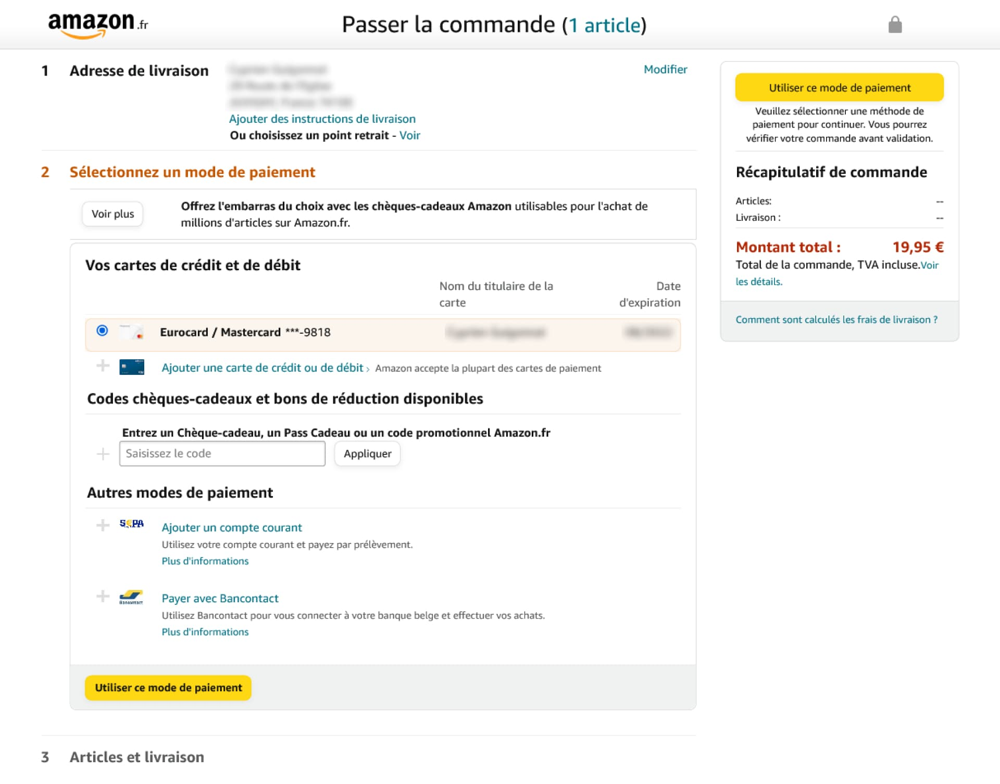
[Figure 6] Capture d'écran de la phase « Passer la commande » sur Amazon, afin de renseigner notre « Adresse de livraison / Mode de paiement ». 2021 [En ligne] https://www.amazon.fr/ref=nav_logo.
De même, cette cause peut prendre de l’ampleur, car une trop grande quantité d’information à renseigner pour l’utilisateur peut entraîner un allongement du temps de complétion. Par exemple, devoir remplir et assimiler la quantité d’informations des documents administratifs de la CAF [Figure 7] devient contraignante voire pesante pour l’utilisateur. Selon Hélène Bégon (Haute fonctionnaire, cabinet du commissaire général au développement durable), 68% des français déclarent connaître des freins à l’utilisation de l’administration en ligne6. Entre le manque général d’aisance en connaissance informatique, la difficulté à joindre un agent, ou la complexité des démarches et des procédures ; tous ces freins sont dû à une identité donnée accablante du formulaire numérique.
Afin de décrire plus en profondeur la source de cette identité, il faut tout d’abord explorer le contenu des formulaires numériques. En fonction du contexte dans lequel le service veut que l’utilisateur puisse renseigner son information, sa modalité de saisie peut varier. Selon l’article des conseils de design pour les champs de saisie, édité par Nielsen Norman Groupe (NN/g), il affiche trois types d’exemples7 dans la façon de saisir une donnée chiffrée [Figure 8]. Pour American Airlines (à gauche), l’utilisation d’une liste déroulante nécessite trois interactions minimum, comparées à trois ou plus pour le clavier numérique dans le renseignement d’une distance (au centre), et une seule minimum avec un bouton pour Delta Airlines (à droite). Ici, nous pensons que le bouton peut être la bonne solution — en vue du faible coût de son interaction minimale — mais le cas d’un nombre souhaité plus élevé du chiffre sera davantage adapté avec la liste déroulante ou le clavier numérique. Cela signifie que ce choix peut faciliter ou contraindre l’expérience utilisateur. Ainsi, une modalité de saisie est très dépendante de sa donnée. Elle se trouve formatée par un contexte dans lequel sa conception dépend d’une compromission, en vue de contraindre un minimum l’utilisateur.
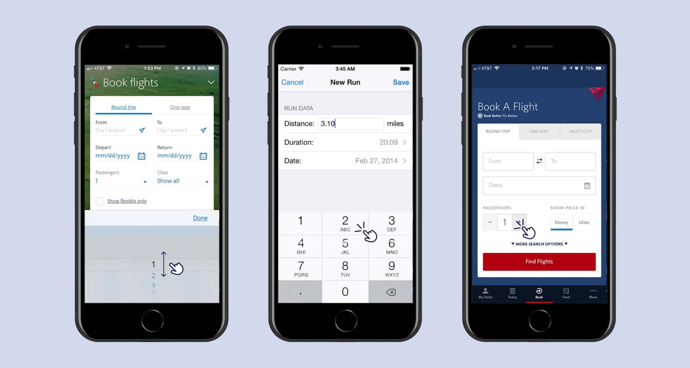
[Figure 8] Mise en situation de trois exemples dans la façon de saisir une donnée chiffrée dans une interface numérique mobile d'après Yuxuan (Tammy) Zhou (NN/g), 2018 [En ligne] https://www.nngroup.com/articles/input-steppers/.
Cependant, le compromis de ces données peut s’élargir à une plus grande échelle de modalité de saisie. En prenant l’exemple de Doctolib (fondée en 2013), leur application mobile [Figure 9] ne permet pas aux personnes en déficiences visuelles d’accéder à une prise de rendez-vous8. C’est-à-dire que cette application privée au service d’un ordre public exclut une modalité de saisie adaptée pour l’ensemble de ses utilisateurs, en fonction de leur situation physique d’accès à l’outil numérique. En d’autres termes, Doctolib a formaté le contenu de ses champs de saisie par la perception d’une vision brute des données administratives.
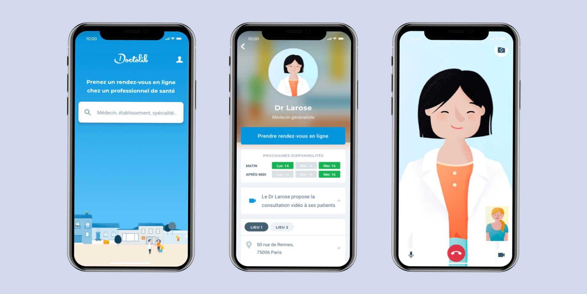
[Figure 9] Mise en situation d'un parcours utilisateur ayant accès à la prise de rendez-vous avec son medecin généraliste par l'intermédiaire de l'application mobile Doctolib, 2021 [En ligne] https://www.doctolib.fr/.
Caractérisées par sa forme rectangulaire standardisée, accompagnée d’une description [Figure 10], [Figure 11], nous nous rendons compte que la transposition des modalités de saisie du formulaire papier vers le numérique n’a exploité que la capacité accrue des calculs informatiques, sans vraiment remettre en question de façon qualitative, le ressenti de l’expérience utilisateur.
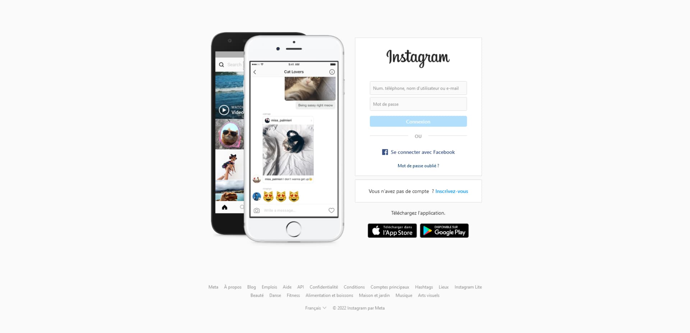
[Figure 10] Capture d'écran d'une modalité de saisie standard (type champs de saisie) pour la création d'un nouveau compte Instragram, 2021 [En ligne] https://www.instagram.com/?hl=fr.
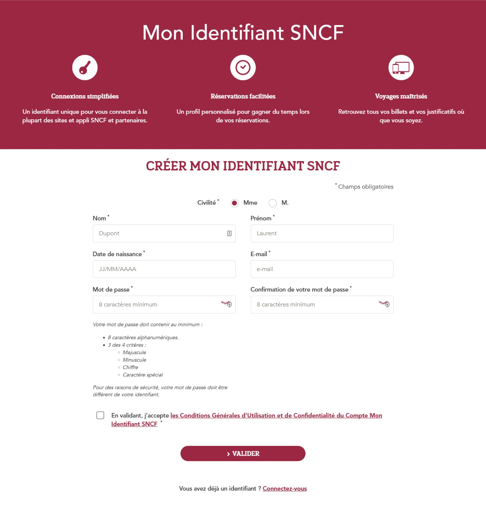
[Figure 11] Capture d'écran d'une modalité de saisie (type checkbox, et champs de saisie) standard pour la création d'un nouvel identifiant SNCF, 2021 [En ligne] https://tgvinoui.sncf/inscription/compte-client-sncf.
Transition
À l’évolution naturelle du format papier au numérique du formulaire, sa forme et les modalités de son contenu sont aujourd’hui des problèmes coercitifs pour les utilisateurs. Pourtant, le design numérique regorge d'opportunités en termes d'expériences et de modalités de saisie : une réflexion approfondie peut améliorer la flexibilité du formulaire numérique. En établissant un effet ontophanique9 engageant la création d’effet callimorphique10, le design numérique est l’instrument de la création d’expériences à vivre positives au sein des formulaires numériques.
II - Améliorer la flexibilité du formulaire numérique
D'après Stéphane Vial, chaque phénomène du monde que l’on perçoit est lié à une condition technique11. Par là, il faut entendre que les êtres ou les choses qui nous amènent à vivre une expérience par l’intermédiaire d’une interaction, ont été déterminés par un designer, ingénieur ou architecte. De ce fait, la dimension technique des interfaces numériques à travers le phénomène des formulaires numériques, peut être contribué par le design numérique dans l’amélioration de sa flexibilité au seul but d’enchanter l’expérience utilisateur [Figure 12], [Figure 13].
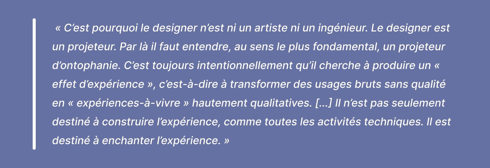
[Figure 12] Citation de Stéphane Vial, L'être et l'écran, chapitre 6, 2013.
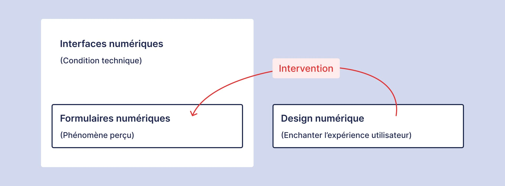
[Figure 13] Schéma représentant l'intervention du design numérique dans les formulaires numériques.
II.1 - Comment rendre flexible la forme ?
Dès lors, peut-être que le design des formulaires numériques de la figure 3 (ou la 5 et 6) doit apporter l’effet inverse d’une conception répétitive contraignante de ses champs de saisie. Nous pouvons imaginer que le formulaire numérique ne puisse avoir aucun champ de saisie dit standardisé. En s’aidant des heuristiques12 pertinentes pour la conception de l’expérience utilisateur (rassemblé par Jon Yablonski)13, le designer numérique peut concevoir un formulaire numérique plus flexible dans lequel l’utilisateur peut adapter son interaction. Cependant, dans le cadre du formulaire numérique de la figure 7, celles-ci peuvent aider à simplifier de manière méthodique son utilisation, mais elles ne suffisent pas à unifier l’expérience vécue.
En revanche, si son expérience est pensée lors d’une conception centrée exclusivement sur le téléphone portable (en plus des études psychologiques), le designer doit repenser l’interface numérique en fonction de l’utilisation de ce support par l’usager. Démarche appuyée par le concept « Mobile First » de Luke Wroblewski (officialisé en 2011)14, elle donne lieu à de nouvelles compositions interactives des interfaces numériques pour les formulaires numériques (et notamment dans les secteurs d’activités privés) dans le but d’améliorer l'expérience utilisateur, comme sur la segmentation d’étapes de champs de saisie en vue de diminuer la coercition du temps de complétion [Figure 14].
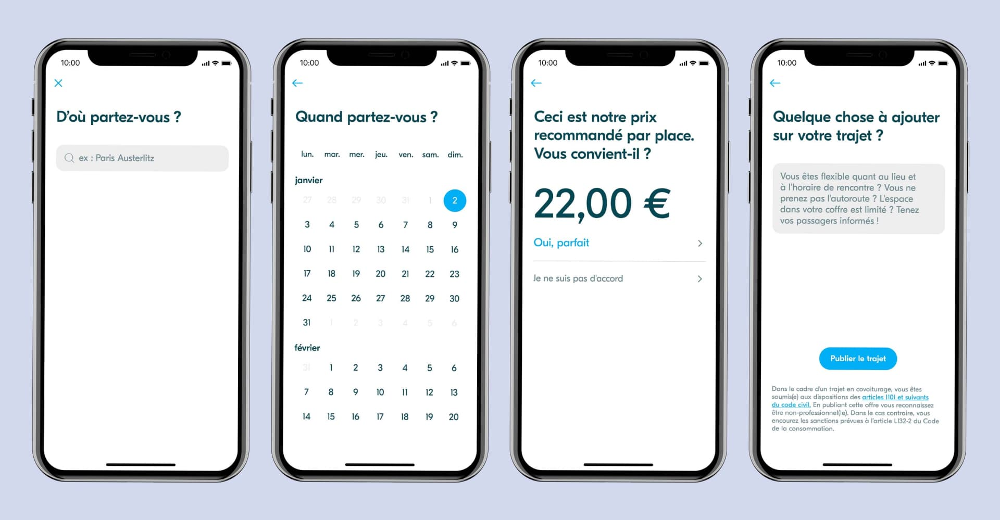
[Figure 14] Exemple d'un parcours utilisateur (simplifié) de l'application BlaBlaCar mettant en marche une segmentation des informations à saisir par l'utilisateur, afin de publier un trajet pour le covoiturage, 2021 [En ligne] https://www.blablacar.fr/offer-seats.
II.2 - Comment rendre flexible l'expression du contenu ?
Selon l’exemple cité précédemment dans la figure 8, la multitude de types de champs de saisie nous informe que la compréhension en amont d’une expérience dépend du contexte dans lequel nous la vivons. Stéphane Vial souligne la « responsabilité »15 de l’orientation des usages de l’appareil numérique utilisé, dans un sens où l’interface définit une immersion émotionnelle de son utilisateur. Si nous combinons cette vision à l'usage du type de contenu d’un formulaire, peut-être que l’interaction doit s’attribuer au domaine dans lequel elle doit être vécue, c’est-à-dire que la manipulation de son information pourrait se rapprocher le plus possible d’une expérience humaine réelle. Par exemple, lorsque les Français changent l'heure d’hiver, il attrape leur horloge et recule l’aiguille avec leur main ; pour l’interface de leur ordinateur, le but est de faire le même geste afin de passer par une « manipulation directe »16 [Ben Shneiderman, 1983] [Figure 15]. Par l’expérimentation, le processus de la réification17 des éléments de l’interface numérique peut faire l’épreuve d’une recherche ontophanique des formulaires numériques.
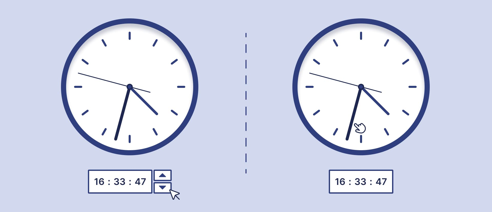
[Figure 15] Schéma montrant une distinction entre une manipulation directe (à droite) et des boutons (à gauche), pour changer l'heure d'une horloge dans le contexte d'une interface numérique.
De plus, en explorant l’exemple de la figure 9, le domaine de l'accessibilité numérique18 de ce service est une façon d’améliorer la flexibilité du formulaire numérique. En ajoutant un phénomène technologique comme la reconnaissance vocale, celle-ci permet une exploration nouvelle de l’interaction entre un humain et une interface numérique. De ce fait, l’ajout de contrainte volontaire du format des champs de saisie peut remettre en question le renseignement d’une même valeur. Elle convie le designer numérique à expérimenter d'autres moyens intellectuels, afin d’aborder une ontophanie numérique d’une manière différente, voire inédite. Comme le prononce Stéphane Vial19 :
[...] elle engage une phénoménologie créative, qui résulte d’un processus de fabrication.
Ainsi, nous pouvons imaginer fabriquer un formulaire numérique sans aucun mot écrit dans l’interface numérique. Cette démarche induit le designer numérique à utiliser des outils graphiques comme l’illustration, la photographie, la vidéo; et sensoriels comme le son ou le toucher (par le vibreur d’un téléphone portable par exemple). En associant ces effets de créations, elles accompagnent l’utilisateur à percevoir une « expérience-du-monde » [Figure 16] singulière, tel un mouvement artistique.
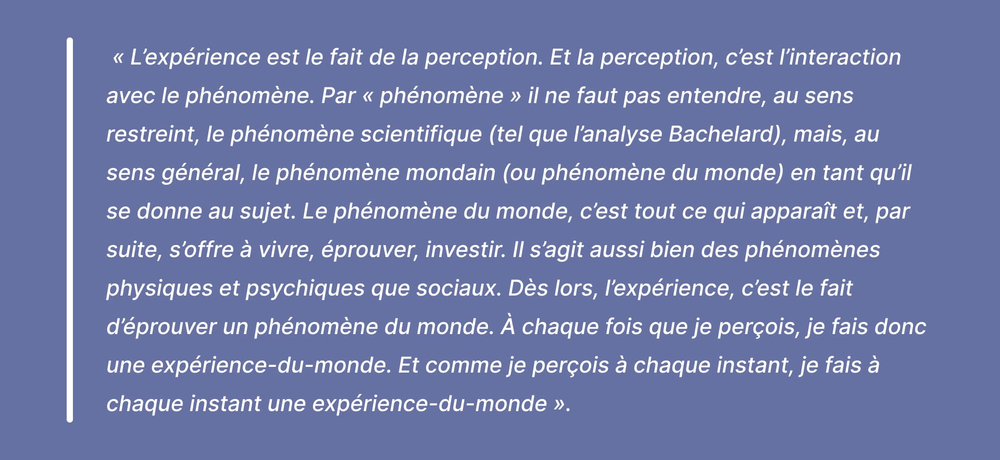
[Figure 16] Citation de Stéphane Vial, L'être et l'écran, chapitre 3, 2013.
Conclusion
Sujet d’une expérience interactive entre une interface numérique et un humain, le formulaire numérique se caractérise par sa volonté d’enregistrer nos informations personnelles. Nous semblons dans un premier temps le subir de par une nécessité imposée par les services d’acquérir ces informations; autant sur le rapport de notre ressenti (pour sa forme) que sur notre rapport intellectuel (pour sa modalité de saisie).
Par ailleurs, l’effet d’expérience qu’il établit avec l’humain et l’interface numérique amène le designer numérique à l’enchanter, en fabriquant la perception idéale du parcours utilisateur. Toutefois, il en doit de son engagement afin de prendre en considération l’éthique de ses pouvoirs décisionnels. Peut-être que nous pourrions mettre l’humain au service des formulaires numériques, en établissant une personnalisation de leurs expériences. Nous pourrions nous tourner vers une caractérisation du formulaire numérique, en coordination avec le designer et ses utilisateurs, permettant de considérer que l’utilisateur deviendrait son propre phénomène d’usage.
Bibliographie
Stéphane Vial (PUF). « Court traité du design », 2010.